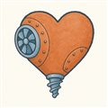
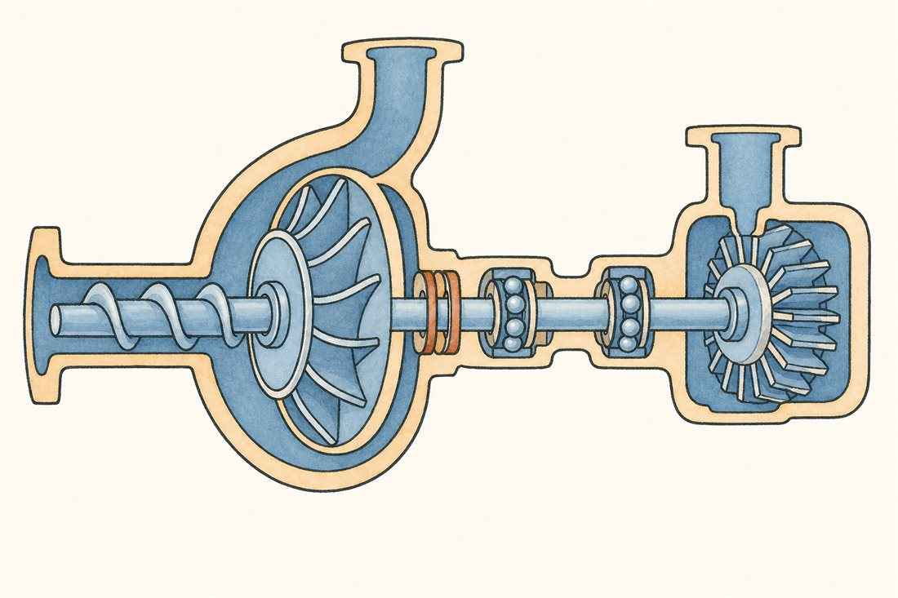
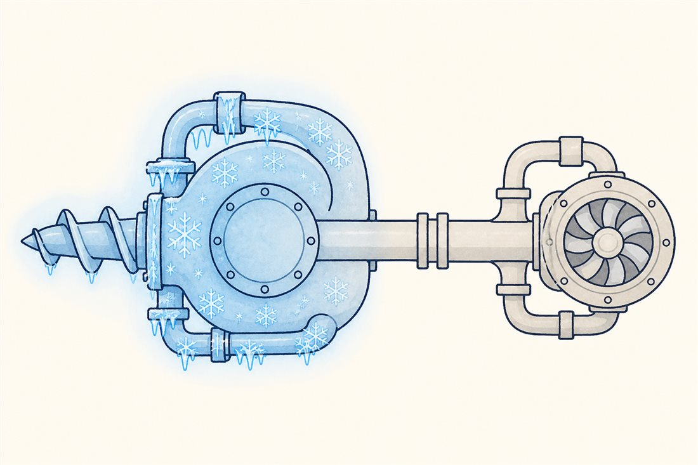
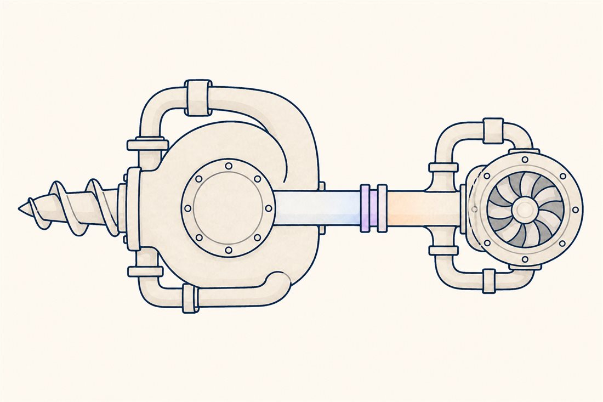
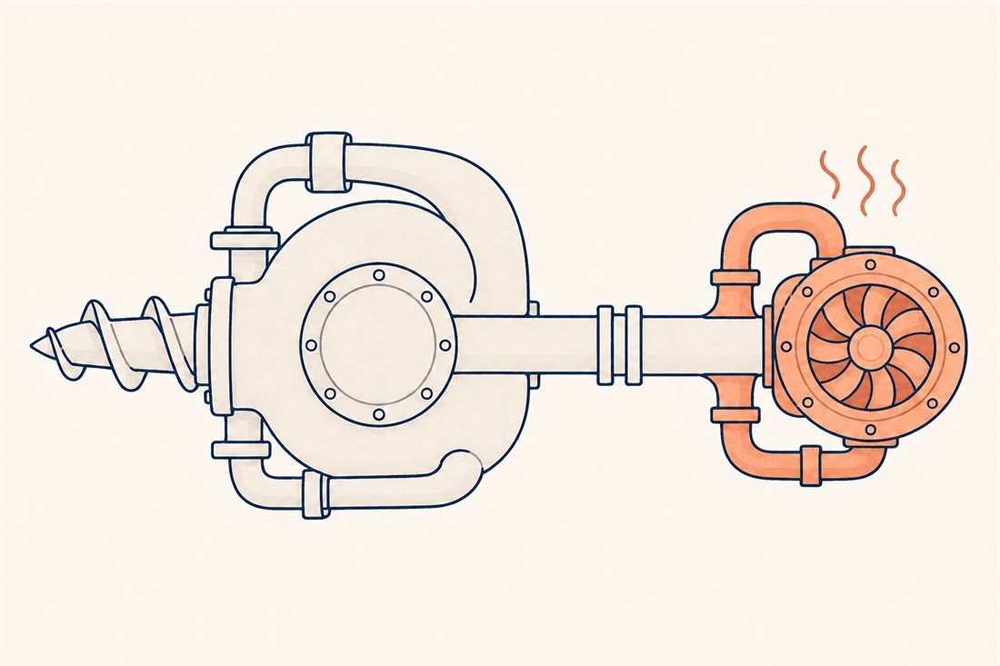

第3巻 だい1わ ── しんぞうの章心臓を、ひらいてみる
第3巻は、これまでと勝手がちがいます。第1巻は宇宙を、第2巻は空を、広く歩きました。今度は1つの機械だけを、まるごと1巻かけて解剖します——ロケットの心臓、ターボポンプ。第1巻第5話で扉の隙間からのぞいたあの機械の、扉を全部あけていく巻です。そしてこの機械は、これからあなたが毎日つきあう相手でもあります。
まず「なぜ心臓が要るのか」から。燃焼室の圧力はLE-9で10MPa——100気圧です。推進剤をそこへ押し込むには、それより高い圧力が要る。いっぽうタンクの中は数気圧しかありません。この差を埋める方法は2つだけ: タンク全体を100気圧超——燃焼室圧に噴射器や流路の損失を上乗せした圧力——に耐える容器にするか（壁が分厚くなり、タンクが戦車になる）、タンクは薄いまま、途中に小さな昇圧の心臓を置くか。ポンプ供給式とは、この2択の答えです。

この機械のむずかしさを、1枚の絵で言えるとしたら——1本の軸の、両端の温度です。切り替えて見てください。



よりみちタンクで押してはいけないのか
押してもいいのです——小さければ。姿勢制御スラスタや小型衛星の推進系は、いまも圧力供給式（タンク圧だけで押し込む）が現役です。問題は大きさの物理: 内圧に耐えるタンクの壁厚は圧力×半径に比例して増えるので、大きなロケットの巨大タンクを100気圧仕様にすると、構造重量が壊滅します。第1巻第1話の質量比の税金がここを直撃する。だから大型エンジンはタンクを数気圧の薄皮にして、昇圧はぜんぶ小さな心臓に任せる——ターボポンプは「タンクの壁厚を燃料に換える機械」とも言えます。
よりみちV8エンジンの重さで、機関車28台ぶん
NASAがシャトルの資料に残した比較が痛快です——SSMEの高圧燃料ターボポンプ（HPFTP）は「重さはV8自動車エンジン並み、出力はその310倍」。定格で71,140馬力、全力運転では約77,000馬力・毎分37,000回転超（時速100kmで走る車のエンジンが2,000回転です）。液体水素を1.9MPaから45MPaまで押し上げる。「機関車28台ぶんの馬力」が洗濯機ほどの箱から出てくる——このパワー密度こそがロケットの心臓の正体で、そしてこの巻でこれから見ていく難しさ（キャビテーション・振動・過渡）は、ぜんぶこの密度の代償です。
 流体屋のためのノート — この巻の地図
流体屋のためのノート — この巻の地図
この巻はあなたの母国語圏なので、以後は現場の言葉で書きます。設計空間の座標系はまず比速度Ns（形式選定）と吸込比速度Nss（キャビテーション余裕）。LE-9のFTPは41,600rpm・吐出19.1MPa、OTPは17,000rpm・17.9MPa（IHI技報）——この運転点に流量・段揚程・NPSHを添えて初めてNs・Nssの平面に置け、設計者の選択が読めるようになります。以後の章立ては「高パワー密度の代償」を1つずつ潰す旅です: 吸い込み側の戦い（02 キャビテーション）、羽根車の仕事（03）、駆動side（04）、両端の世界の綱渡り（05 軸受・シール）、回る軸の動力学（06）、過渡（07）、そして作って試す（08）。教科書はSutton ch.10とNASA SP-8107、一次資料はIHI技報が最良の伴走者です。
_at_Kobe_International_Conference_Center_20150704.JPG){kind=link}
・IHI技報 Vol.58 No.2（2025）「LE-9エンジン用ターボポンプの開発状況」（FTP 41,600rpm・19.1MPa／OTP 17,000rpm・17.9MPa／燃焼圧10.0MPa）
・NASA SP-8107, Turbopump Systems for Liquid Rocket Engines（1974）
・NASA "Space Shuttle Propulsion Trivia"（FS-2005-04-027-MSFC）／Wikipedia "RS-25"（HPFTP 71,140hp・1.9→45MPa）
・G. P. Sutton & O. Biblarz, Rocket Propulsion Elements, 9th ed., ch.10